FM Radio: Two Detectors and a Cabled NBFM Link
What we measured
- Broadcast reception. The station at 90.0 MHz was received at rf_gain 49.6 dB without saturation (channel power ≈ −58 dBFS, peak sample 0.005 of full scale). The detector output shows the 19 kHz pilot, a noise floor rising as f², and a small bump near 57 kHz (RDS). Measured on the raw file, the pilot sits −22.7 dB re full deviation, i.e. a pilot deviation of about 5.5 kHz (7.3 %).
- The PLL is a low-pass filter on the message. Replaying one raw file through our Python copy of pll_freqdet_cf for six loop bandwidths attenuates the pilot by −1.3, −9.5, −20.7, −34.5 and −47.3 dB for pll_bw 0.3 … 0.02, within 4 dB of the linear loop model and as the manual expected. The live “Pilot: PLL − Disc” readings in our data sheet (≈ 0 dB down to 0.04) disagree with our own screenshots and are not used.
- Weak signal. The PLL wins only near and below threshold, by 1–2 dB: it has to follow ±75 kHz of deviation, so its loop cannot be made much narrower than the channel (BL/Bch ≈ 0.21).
- Cabled NBFM link (optional part). Line levels of the raw spectra match |Jn(β)|² within 0.05 dB, the carrier vanished at the two Bessel zeros, and the transmitter and receiver show no frequency offset (shared reference clock). De-emphasis 50 vs 75 µs made no large audible difference, as the theory predicts for programme audio (2–3.4 dB above 3 kHz, 0.4 dB in total level).
Setup and the data we used
Receiver: ADALM-Pluto with an antenna, flowgraph lab02_fm_rx.grc with two detectors in parallel (Quadrature Demod and PLL Freq. Det.), a selector, audio chain and three meters (channel power, carrier-frequency offset, SINAD). The receiver is tuned 250 kHz below the signal and a Frequency Xlating FIR Filter (decimation 10) brings it to 0 Hz at 240 kS/s. The I/Q recorder sits after that filter, so every file contains the whole FM channel at 240 kS/s (complex float).
| Recording | fc | Gain | Length | Used for |
|---|---|---|---|---|
| …_40.0_20261122T142119 | 90.0 MHz | 40.0 dB | 8.4 s | Part 1, first gain, f_fine = 0 |
| …_49.6_20261122T142400 | 90.0 MHz | 49.6 dB | 7.8 s | Part 1, working gain, f_fine = 0 |
| …_49.6_20261122T143354 | 90.0 MHz | 49.6 dB | 7.7 s | Part 1 station recording, f_fine = −150 Hz |
| …_LB0.5 / 0.3 / 0.15 / 0.08 / 0.04 / 0.02 | 90.0 MHz | 49.6 dB | 6.7–10.1 s | Part 2, one per loop bandwidth |
| …_434000000_…_fm1000 / fm3000 | 434 MHz | 20.7 dB | 5.2 / 5.1 s | Part 3, Δf = 5 kHz, fm = 1 / 3 kHz |
Besides the 11 recordings we used 27 screenshots and the session data sheet. All figures below were computed from the raw files with our script fm_lab_analysis.py, which contains Python versions of both GNU Radio detectors.
B_T ≈ 2(Δf + W) G_det = f_q / (2π Δf) B_L ≈ 1.06 · pll_bw · f_q CNR = (P_on − P_off) / P_off
PLL (freq. out / freq. in): H(z) = β z / ((z − 1)² + α (z − 1) + β z), α = 4ζb/(1+2ζb+b²), β = 4b²/(1+2ζb+b²), ζ = 1/√2
FM receiver with the non-coherent detector
Settings: dev = 75 kHz, audio bandwidth 15 kHz, Quadrature Demod, fc = 90.0 MHz, de-emphasis 50 µs.
| Quantity | Value | Source |
|---|---|---|
| Working gain | 49.6 dB | first step at 40 dB; peak sample 0.005 FS, no saturation |
| De-emphasis | 50 µs | ITU Region 1 standard; 75 µs sounded only slightly duller — no large difference |
| Above the audio band | pilot, f² noise, 57 kHz bump | no L−R programme visible above the noise (screenshot 2, figure 1) |
| Pilot in the discriminator output | −22.7 dB re Δf | raw file (5.5 kHz deviation); live meter read −38.3 dB |
| Pon, station | −58.25 dBFS | mean of five readings, −59.46 … −57.27 dBFS |
| Poff, empty channel 78.0 MHz | −66.86 dBFS | screenshot 5 (the data sheet planned 98.2 MHz) |
| CNR in the 180 kHz channel filter | 7.97 dB | 6.5–9.1 dB depending on the Pon reading |
| CNR in 200 kHz | 7.51 dB | noise scaled by 200/180 |
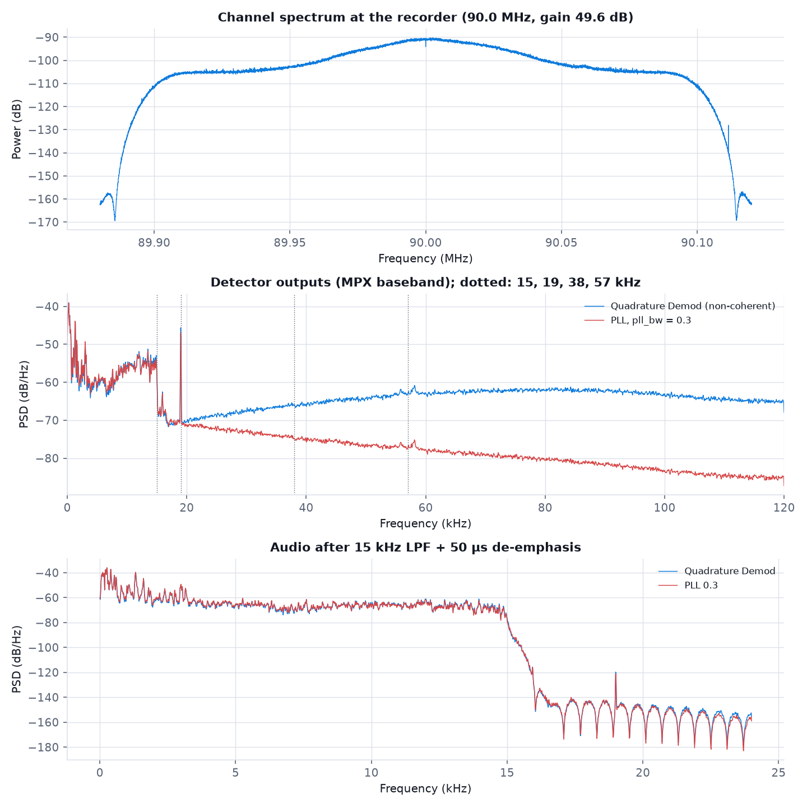
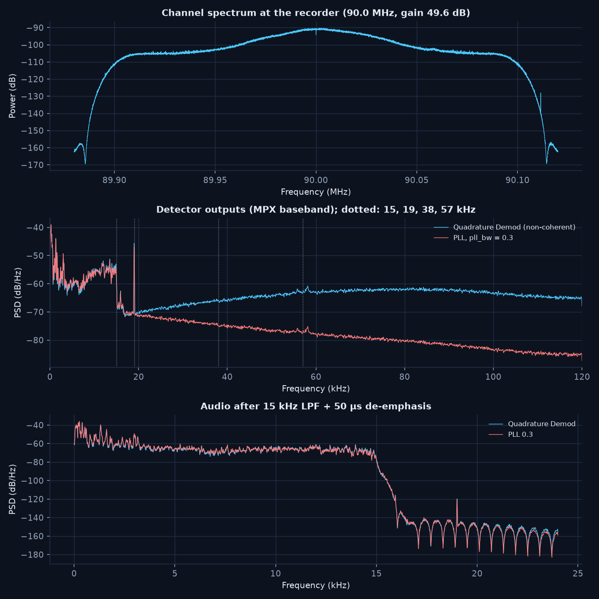
Receiver gain in dev: Question 1 in numbers
Halving dev doubles the detector gain fq/(2π·dev): +6.02 dB of audio, reproduced exactly on the raw file. Because the flowgraph also narrows the channel filter to 2(37.5 + 15) = 105 kHz, the real change is +5.56 dB with extra distortion 12.4 dB below the audio — the 105 kHz filter cuts into the 180 kHz FM signal (screenshot 7, figure 2).
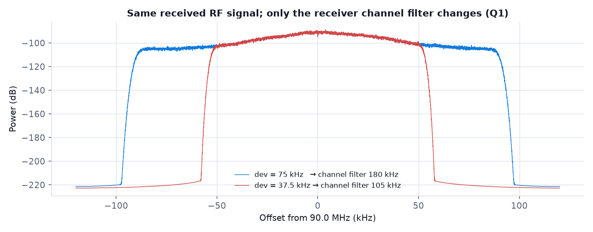
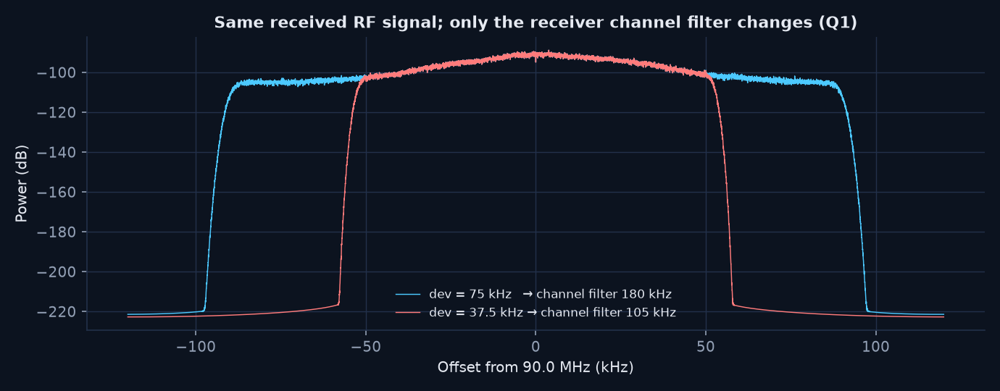
Receiver reference error from the broadcast station
The live “carrier frequency offset” meter (a 0.2 s average of the discriminator) wandered between −120 and +545 Hz, and the setting chosen in the session, f_fine = −150 Hz, turned out to have the wrong sign. At a CNR of 8 dB the discriminator mean is pulled around by noise clicks and programme content: on the raw files it moved by about 600 Hz (+397 → −210 Hz) when f_fine changed by only 150 Hz, so it cannot be trusted.
We therefore estimated the carrier from the centroid of the channel power spectrum (power above the noise floor) in all nine broadcast recordings, after removing each file’s f_fine. The estimator passes the consistency check: 1542 Hz for the files with f_fine = 0 and 1718 Hz for those with f_fine = −150 Hz.
δ = +1679 ± 222 Hz (9 recordings, spread 667 Hz) → ε = −δ / f_c = −18.7 ± 2.5 ppm
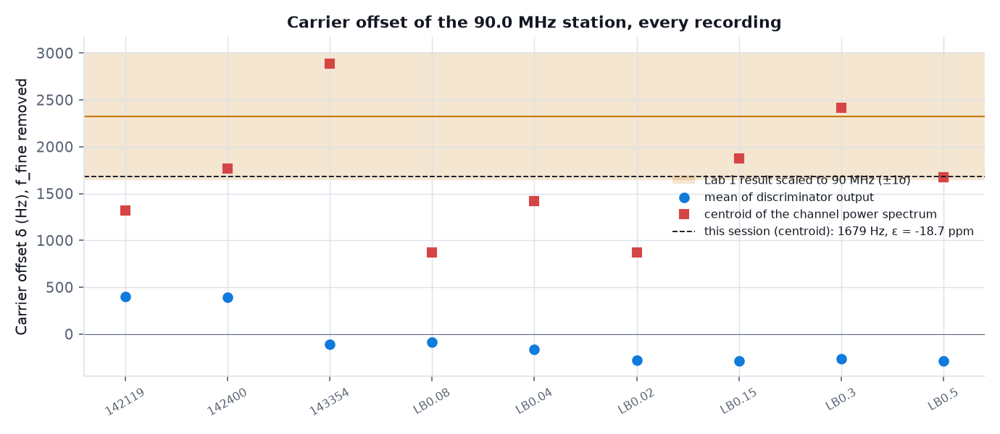
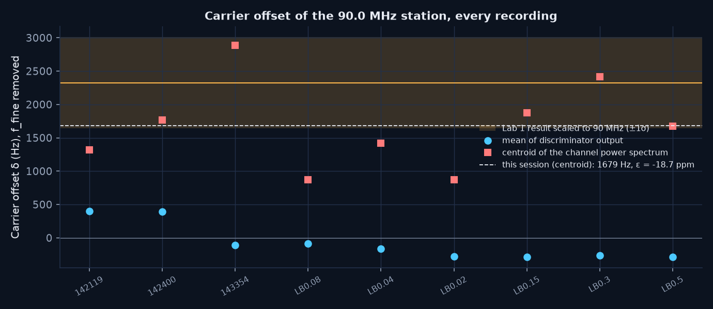
In Lab 1 the same kind of receiver read GSM carriers 24.4 kHz high at 945 MHz, ε = −25.9 ± 7.6 ppm, which predicts +2326 ± 683 Hz at 90 MHz. Same sign (the receiver reads frequencies high, its reference runs slow), difference 7.2 ppm = 0.9 σ: the two sessions agree. Temperature drift of the TCXO between sessions (a few ppm) and the asymmetric programme spectrum with indoor multipath are the remaining systematic effects. The correct f_fine would have been about +1.7 kHz.
Coherent detector (PLL) and the loop bandwidth
“Live” columns are from the data sheet. “Offline” columns run our PLL on one fixed raw file (LB0.3, first 2 s) for each pll_bw, so every step sees exactly the same input. “Model” is the linear loop response H at 19 and 38 kHz.
| pll_bw | BL (kHz) | Audio clean? (live) | 19 kHz: PLL − disc, live | offline | model | L−R band (23–53 kHz), offline | Components above 23 kHz visible? |
|---|---|---|---|---|---|---|---|
| 0.5 | 127.2 | yes | 0.00 | +0.27 | +0.26 | −2.3 | yes |
| 0.3 | 76.3 | yes | −1.87 | −1.32 | −1.26 | −8.3 | yes |
| 0.15 | 38.2 | yes | +0.55 | −9.52 | −9.10 | −16.5 | yes, weaker |
| 0.08 | 20.4 | slightly distorted | +0.18 | −20.73 | −19.57 | −23.8 | very weak |
| 0.04 | 10.2 | slightly distorted | −0.53 | −34.49 | −31.57 | −31.0 | hardly |
| 0.02 | 5.1 | no | −17.15 | −47.28 | −43.61 | −40.7 | no |
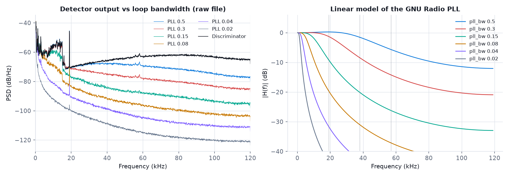
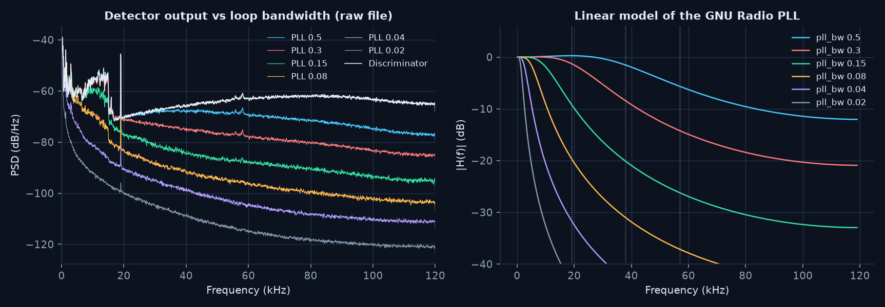
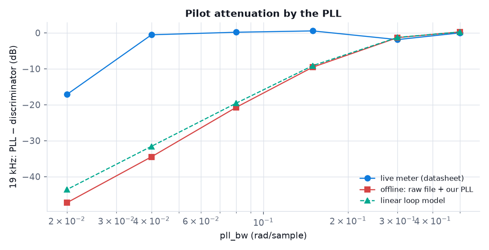
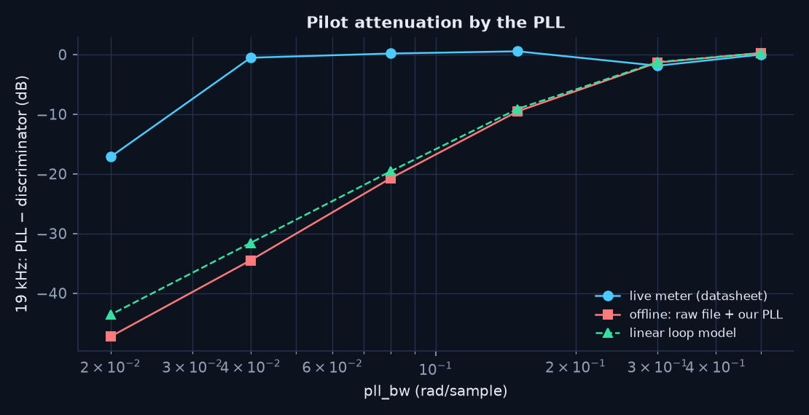
The two detectors on a weak signal (pll_bw = 0.15)
| Gain | Pch (dBFS) | Disc. pilot | Disc. noise 17k | PLL pilot | PLL noise 17k | Pilot/noise disc. | Pilot/noise PLL | PLL advantage | Sounds better |
|---|---|---|---|---|---|---|---|---|---|
| 49.6 | −59.21 | −38.30 | −66.39 | −37.72 | −67.79 | 28.09 | 30.07 | +1.98 | same |
| 35 | −72.03 | −38.30 | −61.85 | −37.62 | −61.10 | 23.55 | 23.48 | −0.07 | same |
| 30 | −72.81 | −42.81 | −46.68 | −43.54 | −47.54 | 3.87 | 4.00 | +0.13 | discriminator |
No files were recorded at 35 and 30 dB, so we also emulated the weak signal offline by adding white noise of known level to the raw file (CNR ≈ 8 dB):
| CNR in 180 kHz | Discriminator | PLL 0.15 | PLL 0.04 |
|---|---|---|---|
| 8.0 dB (file) | 16.1 | 9.7 | −1.7 |
| 5.0 dB | 8.9 | 7.0 | −2.8 |
| 3.2 dB | 4.4 | 5.2 | −3.4 |
| 1.0 dB | 0.4 | 1.7 | −4.4 |
| −2.4 dB | −2.5 | −3.4 | −4.8 |
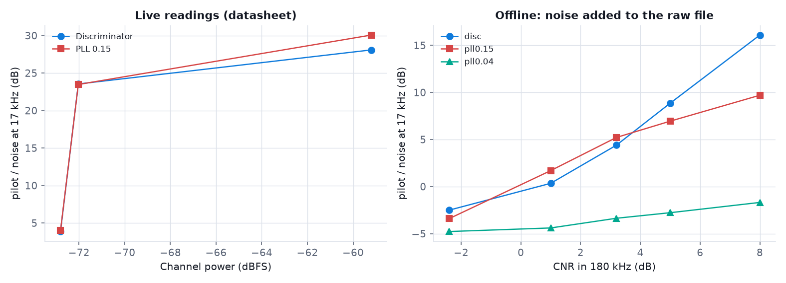
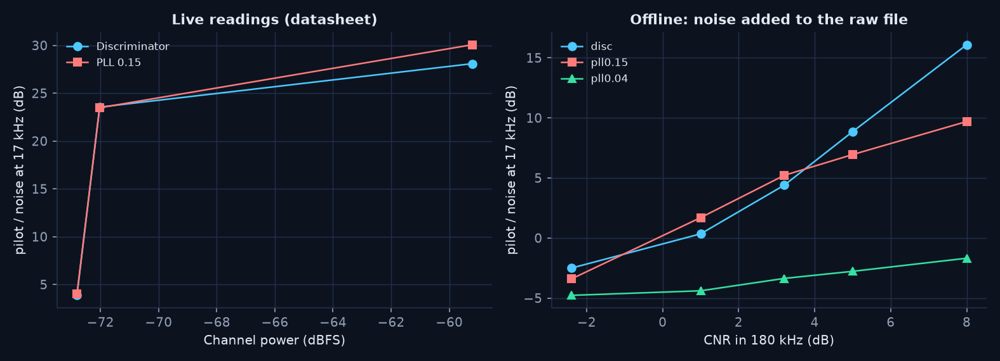
Our own NBFM signal over a cable
Pluto TX → 30 dB attenuator → cable → Pluto RX at ftx = 434 MHz (channel checked empty with the antenna first). Transmitter dev = 5 kHz, fm = 1 kHz, tx_atten = 40 dB; receiver dev = 5 kHz, audio 3 kHz. Level budget: Prx = 7 − 40 + 20·log100.5 − 30 − 0.5 = −69.5 dBm, 59.5 dB below the −10 dBm limit.
| Quantity | Theory | Measured | Difference |
|---|---|---|---|
| First deviation with the carrier nulled, fm = 1 kHz | 2404.83 Hz | 2405 Hz (± 0.35) | +0.17 Hz (0.007 %) |
| Second null | 5520.08 Hz | 5520 Hz (± 0.07) | −0.08 Hz (0.0015 %) |
| Bandwidth, lines within 20 dB, Δf = 5 kHz, fm = 1 kHz | 14 kHz | 14 kHz | 0 |
| Bandwidth, lines within 20 dB, Δf = 5 kHz, fm = 3 kHz | 18 kHz | 18 kHz (raw file) | 0 |
| CNR at tx_atten 40 dB | 46.5 dB (budget, NF 5 dB) | 70.8 dB (Pon/Poff) · 59.5 dB (raw floor) | +24.3 / +13.0 dB |
| Poff / Pon | — | −88.9 / −18.1 dBFS | — |
| SINAD (discriminator, 1 kHz) | — | 51.14 dB live · 73.3 dB offline | — |
| TX → RX frequency offset | — | −3.7 Hz live · −0.26 Hz offline | shared reference |
| Deviation from the raw file (rms·√2) | 5000 Hz | 5000.5 / 5002.6 Hz | 0.01 / 0.05 % |
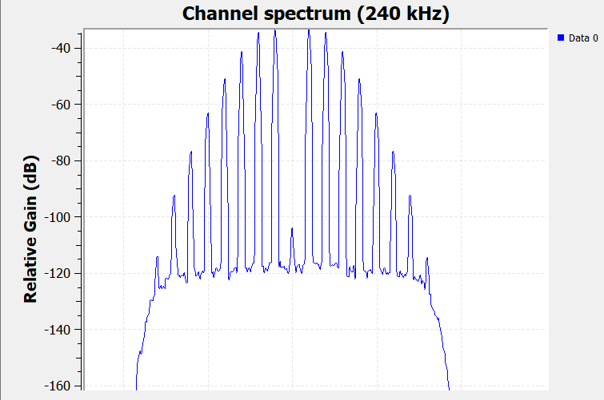
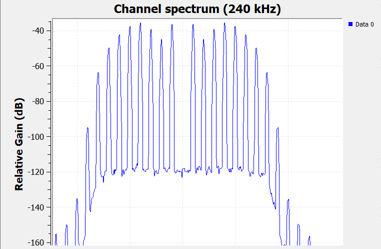
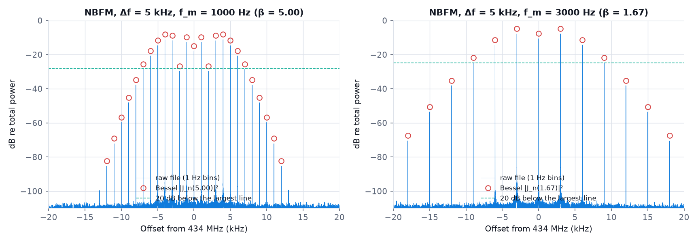
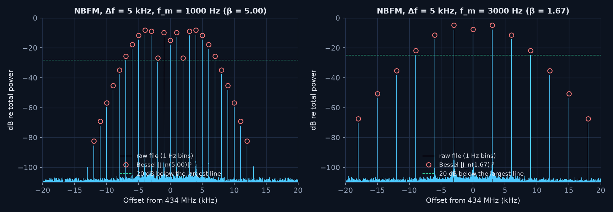
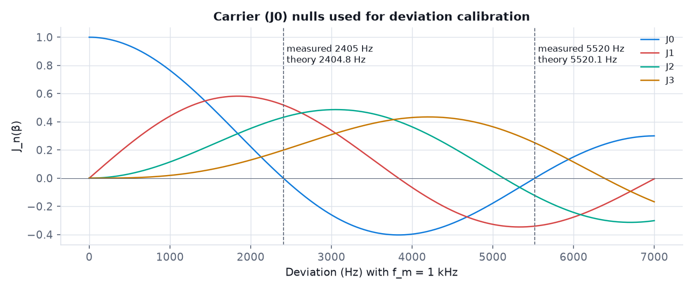
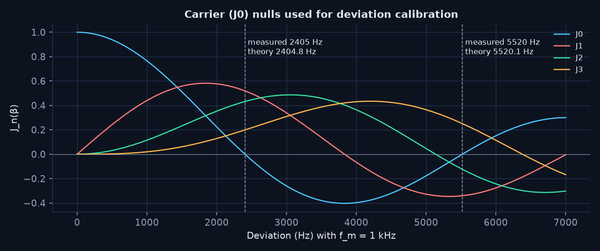
Occupied bandwidth and deviation calibration
| Case | β | Carson 2(Δf + fm) | −20 dB lines | 99 % power, raw | 99 % power, Bessel |
|---|---|---|---|---|---|
| fm = 1 kHz | 5.00 | 12 kHz | 14 kHz | 12.0 kHz | 12 kHz |
| fm = 3 kHz | 1.67 | 16 kHz | 18 kHz | 18.0 kHz | 18 kHz |
The 99 % bandwidth was computed from the 1 Hz raw spectra (cumulative power) and equals the Bessel sum Σ Jn² ≥ 0.99 in both cases. The team-specific deviation of the original handout was removed from this session, so only the two cases of part 3 are reported. For the broadcast station the 99 % width is 180.5 kHz — the channel filter — because at CNR 8 dB noise holds a large share of the power.
Null 1: Δf = 2405 ± 0.4 Hz → β = 2.4050 ± 0.0004 (theory 2.4048) Null 2: Δf = 5520 ± 0.1 Hz → β = 5.5200 ± 0.0001 (theory 5.5201)
Calibration factor of the transmitter (actual / set deviation) = 1.0000 ± 0.0002; independently, the rms deviation of the raw file gives 1.0001.
Answers to the questions of the manual
Question 1 — Receiver dev = 37.5 kHz: what happens to the audio, and why does the RF spectrum not change?
The detector gain fq/(2π·dev) doubles, so the audio rises by 20·log102 = 6.02 dB (6.02 dB on the raw file; 5.56 dB with the flowgraph’s narrower channel filter). dev is only a scale factor in the receiver: the transmitter still deviates ±75 kHz, so the signal at the antenna is unchanged. What changed in screenshot 7 is our own channel filter, coupled to dev in this flowgraph (edges at ±52 kHz); it clips part of the 180 kHz signal and adds distortion.
Question 2 — Why does a carrier-frequency error appear as a constant at the discriminator output? Is it consistent with Lab 1?
With an offset δ the baseband signal is A·ej(2πδt + φ(t)); the discriminator outputs the phase derivative, (1/2π)dθ/dt = δ + (1/2π)dφ/dt. The message term has zero mean (stations remove DC), the offset term is a constant, so averaging the output and multiplying by Δf reads the error. Our value, ε = −18.7 ± 2.5 ppm (δ = +1.68 kHz at 90 MHz), agrees with Lab 1 (−25.9 ± 7.6 ppm) within 0.9 σ and has the same sign; both are at or inside the ±25 ppm Pluto specification (details).
Question 3 — Why does a narrow-loop PLL lose the 38 and 57 kHz components?
The PLL output is the frequency of its own oscillator, which follows the input only as fast as the loop allows: for the message the loop is a second-order low-pass H(f) with natural frequency ≈ (2b/√(1 + √2·b + b²))·fq/2π. At pll_bw 0.15 that is ≈ 10 kHz with the −3 dB point near 12 kHz, giving −20 dB at 38 kHz and −26 dB at 57 kHz (−16.5 dB measured on the L−R band). Narrowing the loop moves the cut from 57 to 38 kHz, then onto the pilot and finally into the audio (−3 dB near 2 kHz at 0.02). A narrow loop also cannot follow ±75 kHz of fast deviation: the phase error grows, the loop slips cycles and the audio distorts. For stereo and RDS the discriminator (or a wide PLL, pll_bw ≥ 0.5) is the right detector.
Question 4 — On a weak signal, which detector had the better pilot-to-noise ratio, and how does that relate to loop width over channel width?
Live: the PLL was 2 dB better at the strongest level and equal (± 0.15 dB) at the two weaker ones. Emulated: above threshold the discriminator wins, because the 0.15 loop attenuates the 19 kHz pilot itself (−9.5 dB) more than the 17 kHz noise (−3.4 dB); near and below threshold (CNR 1–3 dB) the PLL is 0.8–1.4 dB better — threshold extension from fewer clicks — and a 0.04 loop is worse everywhere because it no longer tracks. The PLL’s advantage comes from seeing noise only in BL instead of the channel: the smaller BL/Bch, the fewer cycle slips. But BL must stay large enough to track the deviation; for WFM BL/Bch = 38/180 ≈ 0.21 is not small, so the gain is only 1–2 dB near threshold. NBFM allows a much smaller ratio.
Question 5 (optional) — Carrier-null deviations against theory: where does the error come from?
- Setting of dev: the transmitter is digital (sensitivity exactly 2π·dev/fq); the raw-file deviation is right to 0.01 %, i.e. ±0.24 Hz at 2405 Hz.
- Display resolution: 58.6 Hz bins limit the frequency of a line, not the carrier amplitude. The real limit is the display floor 85 dB below the largest line: |J0| < 2.9·10⁻⁵, i.e. ±0.06 Hz.
- Judging “zero”: with the slope |J1(2.405)| = 0.519, calling the carrier gone when it is 30 dB down gives ±32 Hz (±37 Hz at the second null). Our screenshots show it 69 dB down (±0.35 Hz) and below the floor (±0.07 Hz).
Judging the zero by eye dominates; with the recorded screenshots the uncertainty is ±0.4 / ±0.1 Hz, and both measured differences lie inside it.
Question 6 (optional) — Measured bandwidth against Carson’s rule
With the −20 dB-line criterion Carson underestimates both cases by 2 kHz (12 vs 14, 16 vs 18 kHz). With the 99 % criterion it is right for β = 5 but underestimates fm = 3 kHz (β = 1.67): the n = 3 line is only 17 dB below the largest one and holds 1.3 % of the power, while Carson counts orders n ≤ β + 1 (≈ 98 %). At small β and large line spacing every omitted line costs 2fm. Note: the screenshot fm 3000 showed the ±9 kHz lines 45 dB down and read 12 kHz; the raw file of the same setting matches Bessel exactly, so we report 18 kHz.
Predictions against the measurement
| # | Quantity | Prediction | Measured | Relative error | Main source of the difference (size) |
|---|---|---|---|---|---|
| 1 | Audio change, dev 75 → 37.5 kHz | +6.02 dB | +5.56 dB (flowgraph) / +6.02 dB (gain only) | −7.6 % | Coupled 105 kHz channel filter removes part of the signal (distortion −12.4 dB) |
| 2 | Pilot in the discriminator output | −20 dB (10 % pilot) | −22.7 dB (live meter −38.3) | −13.5 % | This station’s pilot is 7.3 % (8–10 % allowed); the live meter has a ≈16 dB different scale |
| 3 | Receiver reference error | −25.9 ± 7.6 ppm (Lab 1) | −18.7 ± 2.5 ppm | +28 % (0.9 σ) | Lab 1: two GSM carriers, 4.88 kHz bins; TCXO drift between sessions; programme asymmetry and multipath at CNR 8 dB |
| 4 | Narrowest clean pll_bw | ≈ 0.1 (manual) | 0.15 | +50 % | Sweep step 0.15 → 0.08 (±0.07); listening judgement; low CNR |
| 5 | Pilot attenuation, pll_bw 0.15 | −9.10 dB (model) | −9.52 dB | 4.6 % | Linear model; noise and clicks act non-linearly on the loop at CNR 8 dB |
| 6 | Pilot attenuation, pll_bw 0.08 | −19.57 dB (model) | −20.73 dB | 5.9 % | As row 5 |
| 7 | First carrier null | 2404.83 Hz | 2405 Hz | 0.007 % | Zero detection ±0.35 Hz |
| 8 | Second carrier null | 5520.08 Hz | 5520 Hz | −0.0015 % | Zero detection ±0.07 Hz |
| 9 | −20 dB bandwidth, β = 5 / 1.67 | 14 / 18 kHz | 14 / 18 kHz | 0 | Resolution = line spacing (1 / 3 kHz) |
| 10 | 99 % bandwidth, β = 5 / 1.67 | 12 / 18 kHz | 12.0 / 18.0 kHz | 0 | 1 Hz resolution |
| 11 | De-emphasis 75 vs 50 µs | −2.0 dB at 3 kHz, −3.4 dB at 15 kHz | −0.4 dB total level; no large audible difference | — | Programme energy is concentrated below 3 kHz, where the two curves differ by < 2 dB |
| 12 | CNR of the cable link | 46.5 dB | 70.8 dB (Pon/Poff) / 59.5 dB (raw) | +52 % | Transmitter noise (≈11 dB) and budget assumptions (Pmax, loss, NF) |
| 13 | SINAD of the cable link | 84 dB (SNRo formula, CNR in BT = 71.7 dB) | 73.3 dB offline / 51.1 dB live | −12.6 % / −39 % | Ceiling set by device distortion and noise; the live meter is probably limited by the depth of its band-reject filter (~53 dB) |
What we would do differently
- Record the empty channel (Poff) and every level of the weak-signal table, so CNR and the detector comparison can be reproduced entirely from raw data.
- Pick a stronger station or a better antenna position: at CNR 8 dB the live frequency-offset meter was useless.
- Set f_fine from a long average of the raw file (or the spectrum centroid), and check the sign of the correction with a known tone.
- Read the “Pilot: PLL − Disc” meter only after it settles and cross-check it with the spectrum.
- Put our team name into run_rx.bat before the session (files are named Team-00) and record full 10 s files.
- Calibrate the dBFS scale against a known level so the cable-link budget and CNR can be compared in dBm.
- Write listening observations (de-emphasis, dev = 37.5 kHz) into the data sheet on the spot.
Listen: demodulated audio from our recordings
Each clip was demodulated offline from the raw I/Q file (15 kHz or 3 kHz audio filter, 50 µs de-emphasis). Compare the cable link far above threshold with the station near and below threshold.
Screenshots from the session

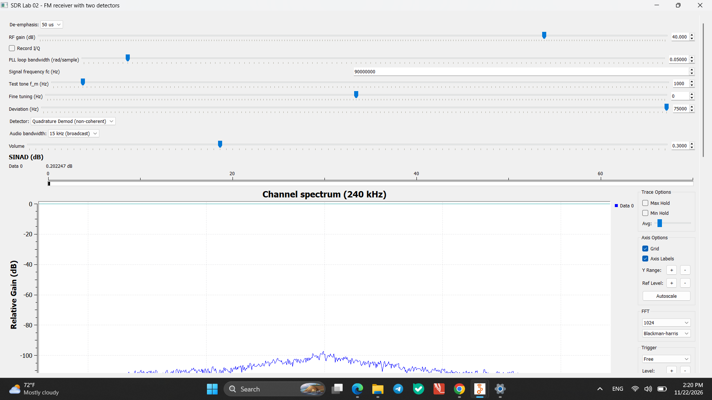

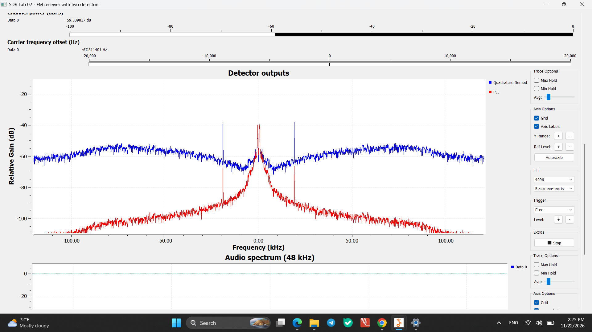

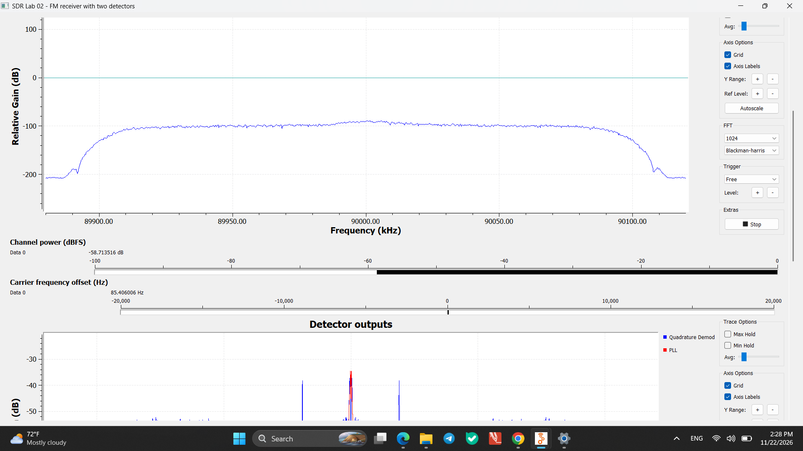

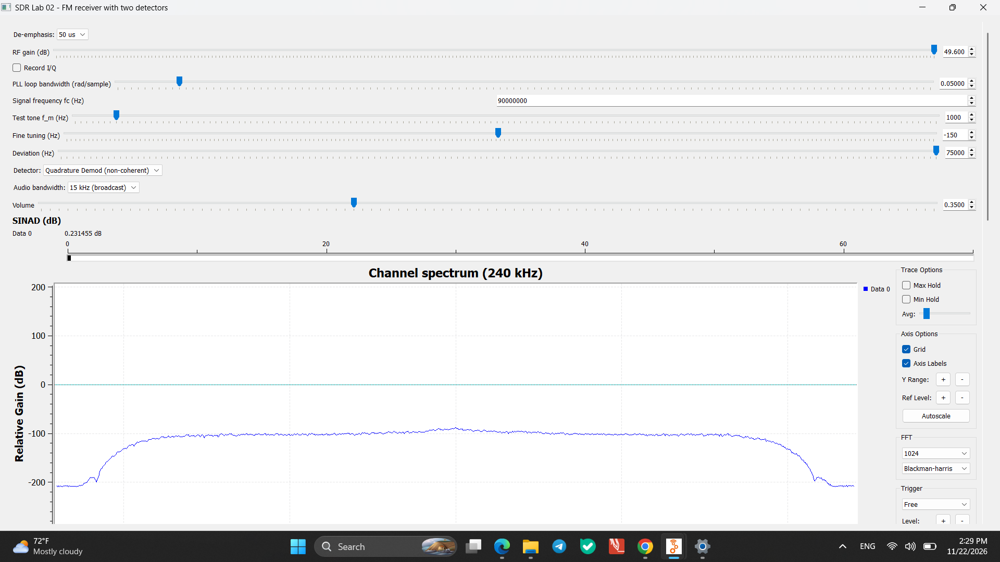

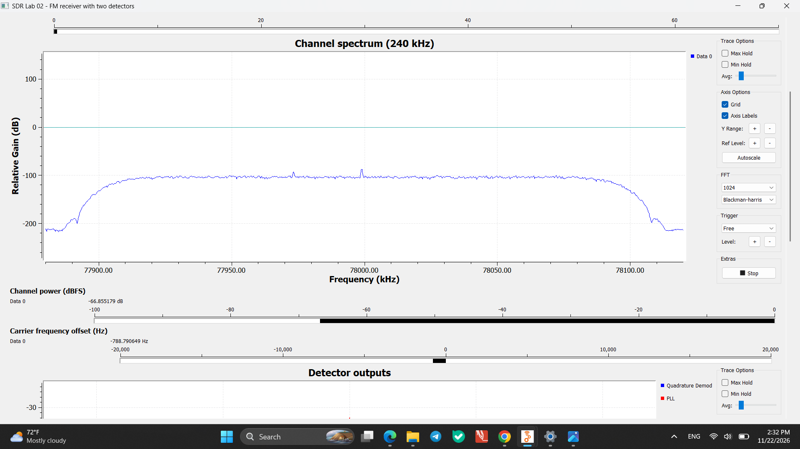

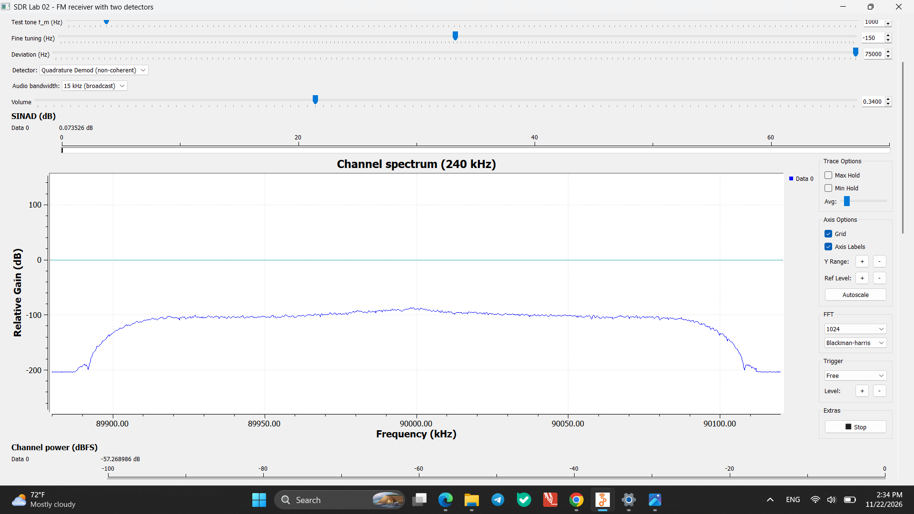

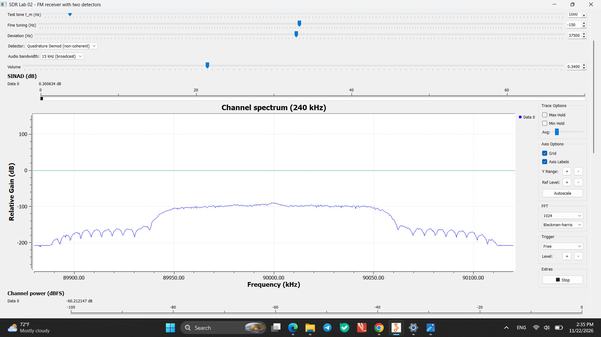

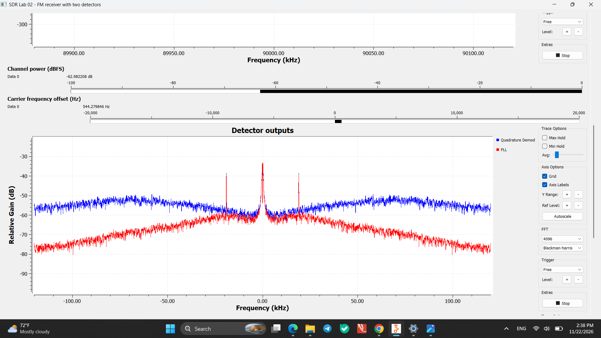

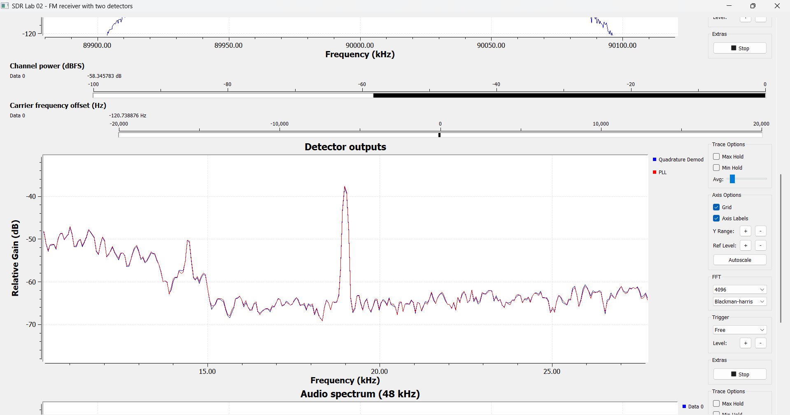

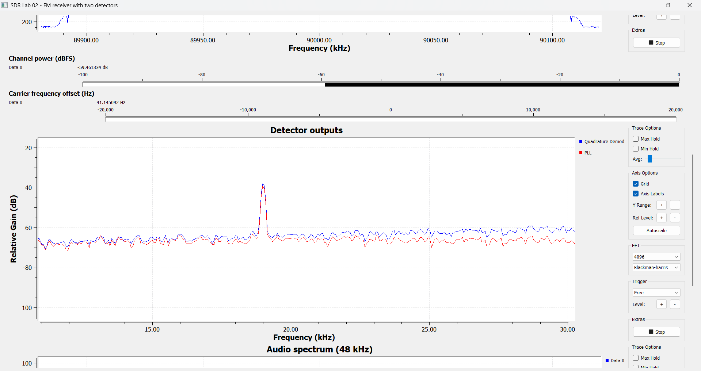

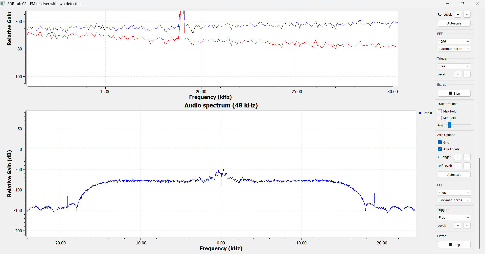

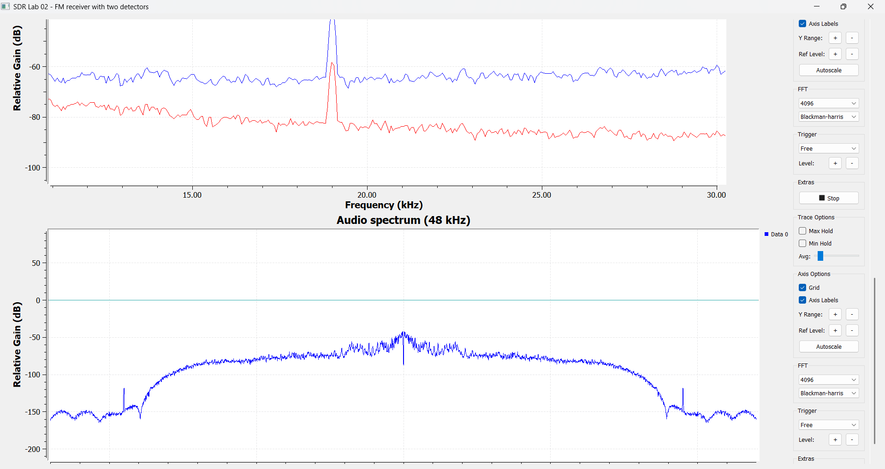

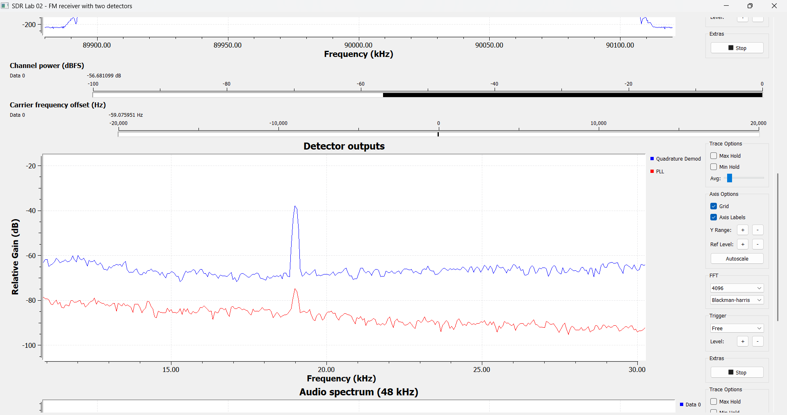

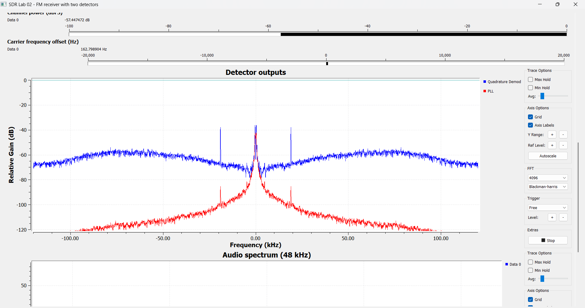

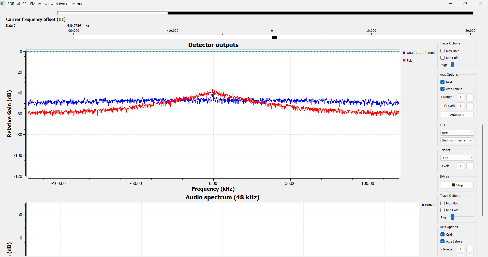

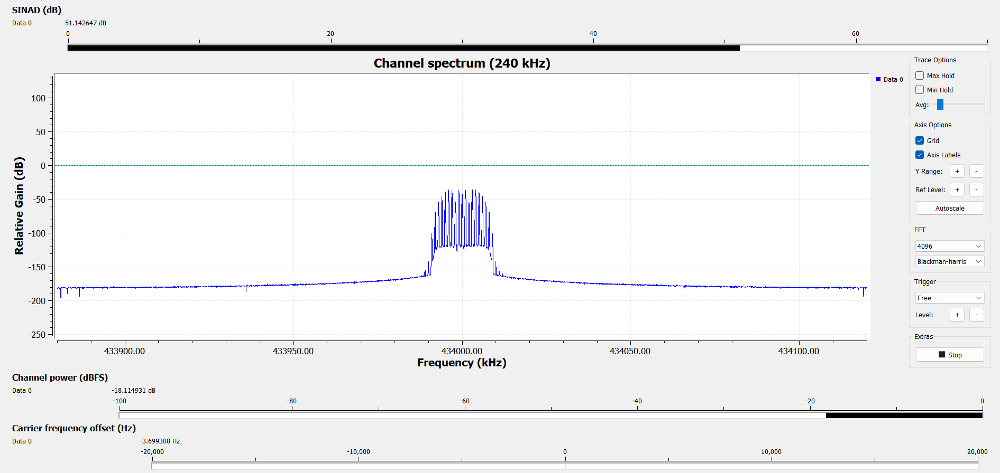

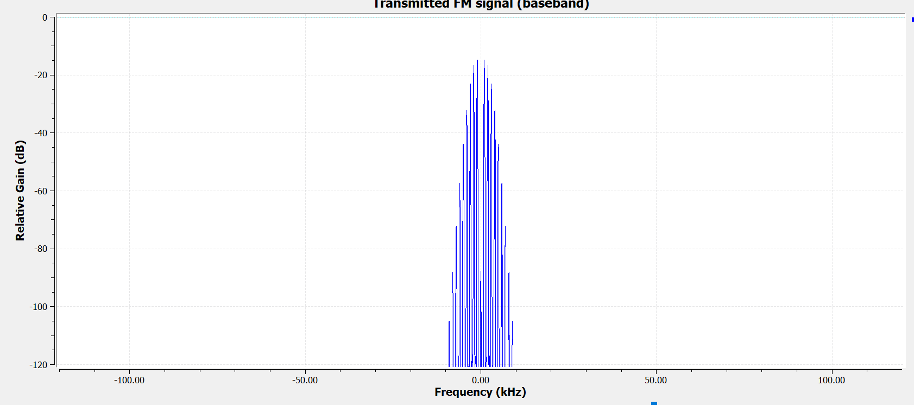

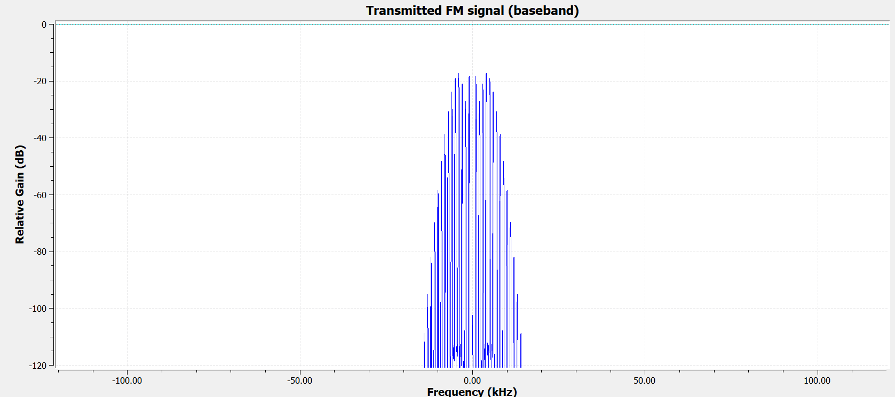

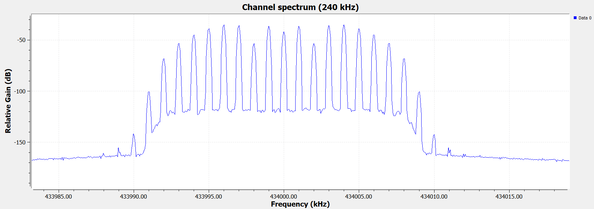

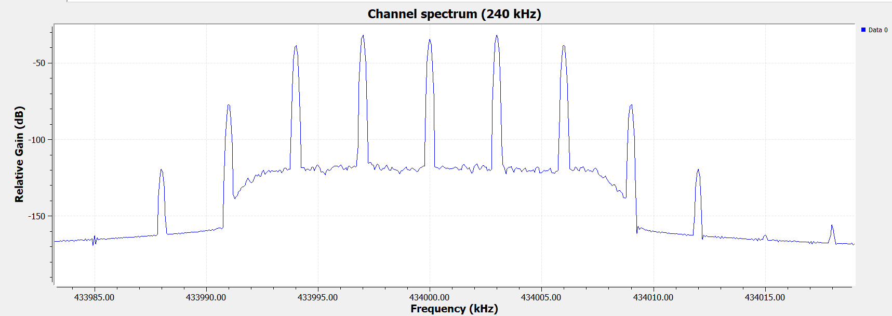
Data, code and team
- Analysis of the raw I/Q files (both detectors, PLL sweep, weak-signal emulation, Bessel lines, reference error, figures, audio): fm_lab_analysis.py → results.json
- Session data sheet: lab02_session1_datasheet.xlsx
- Flowgraphs used in the session: lab02_fm_rx.grc · lab02_fm_tx.grc · pre-lab report: prelab.html
- The 11 raw recordings (≈ 150 MB) are too large for this repository; their per-file results are in results.json.
- Team: Mohammad Amin Khoshkam and Sobhan Yarmohammadi ran the session together (flowgraphs, measurements, recordings).
- AI tools: Claude (Anthropic) was used to write the offline analysis code, produce the figures and draft this page; all measurements, screenshots and recordings were made by the team in the lab.
- J. G. Proakis and M. Salehi, Communication Systems Engineering, 2nd ed., Prentice Hall, 2002.
- M. Lichtman, PySDR: A Guide to SDR and DSP using Python, https://pysdr.org
- ITU-R BS.450, “Transmission standards for FM sound broadcasting at VHF”; ITU-R BS.643, “Radio data system”.
- GNU Radio project, GNU Radio Wiki: block documentation (PLL Freq Det, Quadrature Demod, control_loop), https://wiki.gnuradio.org
- SDR Laboratory, Experiment 2 lab manual, “FM radio,” Sharif University of Technology, 2026.